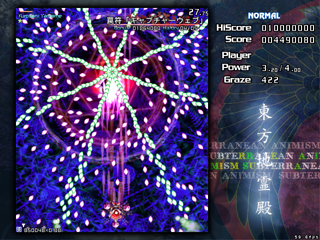
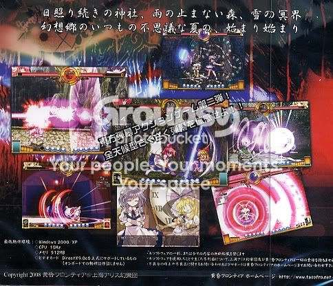
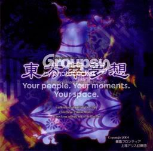
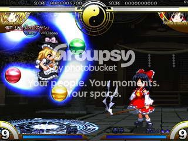

~ TouhoU FanCulB ~ โหลดโหด!![การ์ตูนเมดซังของนายอากิมาแล้ว!]


-------------------------------------~ TouhoU FanCulB ~---------------------------------------
กระทู้นี้มีไว้เพื่อพูดคุยแลกเปลี่ยนรประสบการณ์เรื่องโทโฮ และทำให้โทโฮเป็นที่รู้จักในในบอร์ดอีโค่มากขึ้น -w-
ตัวจขกท.เองก้มีความสนใจและชอบโทโฮเหมือนกันเลยตั้งกระทู้ไว้เพื่อมีคนมาโพสภาพข้อความดีๆเกี่ยวกับโทโฮเยอะ
และก็ให้คนมาคุยเรื่องโทโฮเยอะๆด้วย
กระทู้เก่ามันตกไปไหนต่อไหนแล้ว เลยตั้งไหม่ซะนี่ ;w;
**กระทู้นี้สามารถลงภาพเกี่ยวกับโทโฮและตัวละครในอีโค่ที่คอสเพลเป็นตัวละครโทโฮหรือตัวละครที่ชอบในโทโฮของตนเองได้นะ
**ลงเพลงโทโฮก็ได้นะ(เป็นลิงค์)

กฏการใช้กระทู้นี้
1.ไม่ใช้วาจาส่อเสี่ยดหรือลบหลู่ศาสนาหรือพระมหากษัติ
2.ไม่โพสข้อความหรือรูปลามกอนาจาณ(ถ้านิดหน่อยกรุณาทำเป็นลิงค์และบอกเรทด้วย)
3.ห้ามใช้วาจาว่าร้ายพูดเสียดสีกัน
สำหรับคนที่ยังไม่รู้จักโทโฮ มาทำความรู้จักกันก่อนนะ

TOUHOUคืออะไร?
โทวโฮว 東方 (ตะวันออก) (ในไทยนิยมเขียนแค่ โทโฮ) คือเกมชูตติ้งที่ถูกรังสรรค์ขึ้นโดย ZUN (ชื่อจริง : โอตะ จุนยะ)
(ตามหลักแล้วควรเขียนว่า Touhou และมักถูกย่อเป็น Toho ซึ่งที่จริงเหนือตัว o ต้องมีขีดด้วย (ō) เพื่อแสดงว่าให้รู้ว่าเป็นเสียงยาว)
(แต่ด้วยข้อจำกัดด้านการแสดงผล ทำให้หลายครั้งมักถูกเขียนง่ายๆว่า Toho ไปเลย แต่ในบอร์ดนี้จะเน้นใช้ Touhou เป็นหลัก)
โดยอาจพูดได้ว่า เกือบทั้งเกมนั้นเกิดจากฝีมือของเขาเพียงคนเดียว
งานประจำของเขาคือการเป็น 1 ในทีมงานสร้างเกมของค่าย Taito
และงานอดิเรก(?)ของเขาก็คือ การสร้างโทโฮนั่นเอง
โทโฮเป็นเกมแนว Shooting ที่อาจกล่าวได้ว่าโด่งดังมากถึงมากที่สุดเท่าที่เคยมีมา และถูกเล่นโดยผู้คนมากมายหลายประเทศ
และไม่ว่าจะถูกนำไปเล่นที่ใด ก็สามารถตรึงใจของผู้เล่นจนเป็นที่นิยมได้เสมอ
นอกจากนี้ยังเป็นแรงบันดาลใจและแม่แบบให้กับเกมชูตติ้งยุคใหม่ในปัจจุบันอีกด้วย
อาจกล่าวได้ว่าทั้งตัวเกมและผู้สร้างนั้น มีผลสะเทือนวงการในวงกว้างเลยทีเดียว
จุดเด่นของโทโฮ คือ
- ภาพ 2 มิติกับฉาก 3 มิติที่ลงตัวอย่างสวยงาม ทั้งดอกไม้ร่วงโรย หิมะโปรยปราย ประกายแสงระยิบระยับ
หมอกสดับลับตา และที่สำคัญก็คือ...กระสุนมากมายที่สวยงามราวกับเทศกาลดอกไม้ไฟ
- เนื้อหาที่ดุเดือดชวนติดตาม และยังมีมุขตลกอยู่ตลอดทาง
ไปจนถึงจุดกำเนิดของเรื่องวุ่นวายที่แสนจะง่ายดายเพราะความเอาแต่ใจของตัวละครแต่ละตัว
- ตัวละครที่มีเสน่ห์และเอกลักษณ์ที่น่าสนใจ
นอกจากนี้แต่ละคนก็มี "ความสามารถ" ที่แข็งแกร่งยากจะคาดเดาอยู่เสียด้วย
- การเล่นคำ การใช้ศัพท์โบราณ และการอ้างอิงเนื้อหาจากแหล่งต่างๆอย่างน่าอัศจรรย์
ผู้เล่นจึงได้รับทั้งสาระ ความรู้ และความบันเทิงในเวลาเดียวกัน
- ระบบของตัวเกมอันหลากหลาย แต่ไม่ซับซ้อนจนยากเกินจะเข้าใจ
เมื่อใช้ประโยชน์จากระบบได้ดี ก็สามารถเล่นได้อย่างสนุกยิ่งขึ้น
- และที่ขาดเสียมิได้ก็คือ เพลงที่ถูกแต่งขึ้นมาอย่างไพเราะยิ่ง และไม่ใช่แค่ไพเราะเท่านั้น
แต่ยังบรรเลงได้เข้ากับฉาก ตัวละคร เรื่องราวที่กำลังดำเนินไป และกระสุนที่ถูกสาดออกมาด้วย !
ด้วยองค์ประกอบเหล่านี้ ทำให้โทโฮกลายเป็นเกมที่มีจำนวนภาคเยอะมาก ถึงขนาดได้รางวัลจากกินเนสบุ๊คเลยทีเดียว
นอกจากนี้ยังถือว่าเป็นเกมชูตติ้งที่ถูกนำมาเขียนเป็นโดจินเยอะที่สุดในโลกและมีเพลงโดจินเป็น Arrange / Remix อัลบั้มมากที่สุดในโลกอีกด้วย
และยังเป็นที่นิยมจนมีงานเทศกาลโดจินประจำปีเป็นของตัวเองที่ยิ่งใหญ่ไม่แพ้ Comic Market เลยทีเดียว
และยังมีงานเล็ก (ประมาณ 50-500 เซอร์เคิล) อีกหลายงานในระหว่างปีนั้นๆ
และทำสถิติสุดยอดด้วยการเขมือบพื้นที่งาน Comic Market ครั้งที่ 75 ไปถึงครึ่งงาน
เรียกได้ว่าไม่เคยมีการ์ตูนหรือเกมใดที่ทำได้ขนาดนี้มาก่อนเลยทีเดียว
นอกจากนี้ Touhou Project นั้นยังได้ถูกเสนอชื่อเข้าชิงรางวัลมัลติมีเดียเผยแพร่วัฒนธรรมญี่ปุ่นครั้งที่ 11
โดย Touhou Project นั้นแม้จะไม่สามารถชิงรางวัลชนะเลิศสูงสุดมาได้ แต่ก็สามารถชิงรางวัลขวัญใจผู้โหวตมาได้ ร่วมกับผลงานอีก 4 อย่าง
โดยหนึ่งในสี่นั้นคือ สุดยอดนวัตกรรมเครื่องเล่นเกม Wii
การที่ Touhou Project ซึ่งเป็นสิ่งที่สร้างขึ้นมาด้วยตัวคนเดียว สามารถยืนเทียบเคียงกับ Wii ได้นั้น มันช่างเหนือคำบรรยายจริงๆ !

เกนโซวเคียว 幻想郷 (ดินแดนมายา) Gensoukyou
(มักย่อเป็น Gensokyo แต่ที่จริงเหนือตัว o ต้องมีขีดด้วย (ō) เพื่อแสดงว่าให้รู้ว่าเป็นเสียงยาว)
สถานที่แห่งหนึ่งซึ่งอยู่ที่ไหนสักแห่งในทิศตะวันออกของประเทศญี่ปุ่นและห่างไกลจากหมู่บ้านของผู้คน
ที่แห่งนี้มีเหล่าภูตผีปิศาจสัตว์ประหลาดนานาชนิดมาอาศัยอยู่มากมาย และคอยเล่นงานมนุษย์ในบริเวณนั้นไปทั่ว
ผู้ใดโชคร้าย ล้วนถูกจับกินไม่เหลือรอดสักราย ผู้คนต่างพากันขนานนามที่แห่งนี้ว่า "เกนโซวเคียว"
เพื่อดับความหวาดกลัวของชาวประชา เหล่ามนุษย์ผู้มากด้วยวิชาและความกล้า จึงเข้ามาต่อสู้กำราบปราบปรามเหล่าภูตอย่างรุนแรง
และได้ตั้งหลักปักฐานในเกนโซวเคียว เพื่อเฝ้าระวังเหล่าภูตมิให้ออกไปทำร้ายผู้คน จนกลายเป็นหมู่บ้านมนุษย์ขึ้น
ในช่วงเวลานั้น เหล่าผู้กล้าต้องต่อสู้กับเหล่าภูตอยู่ทุกราตรีร่ำไป
1000 ปีล่วงเลยไป...เหล่าภูตถูกตีต้อนจนไม่อาจกำแหงออกมานอกเกนโซวเคียวได้
เหล่ามนุษย์เลิกกลัวรัตติกาล เพราะสามารถสร้างแสงสว่างในยามราตรีได้
มนุษย์ศึกษาวิทยาศาสตร์และหลงใหลในวัตถุนิยม จนหลงลืมความเชื่อและตัวตนของเหล่าภูตผีปิศาจ
เกนโซวเคียวค่อยๆถูกลืมเลือนไป จนไม่มีผู้ใดในโลกภายนอกที่รู้จักมัน
หากแต่ผู้คนในเกนโซวเคียวยังคงต่อสู้เรื่อยมา หาได้มีวันสิ้นสุดไม่
ในที่สุด เหล่านักบวชก็ได้ตัดสินใจทำการผนึกเกนโซวเคียวมิให้เข้าออกได้โดยง่าย
จึงรวมพลังกันสร้าง "มหาเขตแดนฮาคุเรย์"
โดยมี "ศาลเจ้าฮาคุเรย์" ซึ่งตั้งอยู่ทางตะวันออกสุดของเกนโซวเคียว
เป็นตัวกำหนดขอบเขตของเขตแดนนี้ และเป็นทางเข้า-ออกอย่างถูกต้องเพียงทางเดียว
โดยมี "มิโกะแห่งฮาคุเรย์" คอยดูแลศาลเจ้าแห่งนี้อย่างกล้าแข็ง
เหล่าภูตผีปิศาจรวมทั้งเหล่าผู้กล้าหาญที่อาศัยอยู่ในนั้นล้วนถูกกักขัง
ประวัติศาสตร์เกี่ยวกับพวกเค้าทั้งหมด ล้วนถูกลืมเลือนไปตามกาลเวลา
ปัจจุบัน.. เกนโซวเคียวก็คือสถานที่ซึ่งใช้ดำเนินเรื่องราวของโทโฮนั่นเอง โดยมี เรย์มุ ฮาคุเรย์ เป็นตัวเอกของเรื่อง
โยวไค Youkai
ในแง่ของภาษาญี่ปุ่น โยวไค แปลว่า ภูตผีปิศาจสัตว์ประหลาดยักษ์วิญญาณ ฯลฯ หรือก็คือ อะไรก็ตามที่ไม่ใช่สิ่งปกติที่มีอยู่ตามธรรมชาติ
แต่ในโทโฮนั้นได้มีการแบ่งแยกเผ่าพันธุ์ต่างๆโดยสมบูรณ์ ทั้ง ผี วิญญาณ ยักษ์ ภูต ยมทูต ยมบาล จอมเวท สัตว์ภูต มนุษย์สัตว์(Ware-) แวมไพร์ เทนกุ ฯลฯ
คำว่า โยวไค ในโทโฮนี้จึงใช้เป็นคำทับศัพท์เพื่อหมายถึง โยวไคที่มีจำนวนเพียง 1 ตัวต่อ 1 เผ่าพันธุ์เท่านั้น
เช่น คาซามิ ยูกะ โยวไคแห่งดอกไม้ , รูเมีย โยวไคแห่งความมืด , ริกเกิ้ล โยวไคหิ่งห้อย , มิสเทีย โยวไคนกกระจอกราตรี ฯลฯ
ซึ่ง พวก"โยวไค"นี้เอง ที่มีจำนวนประชากรมากที่สุดในเกนโซวเคียว
สำหรับท่านที่อ่าน คงต้องคอยระวังสังเกตเรื่องคำว่า โยวไค(ญี่ปุ่น) กับ โยวไค(โทโฮ) สักเล็กน้อย ว่าจังหวะนั้นกล่าวถึงอะไร แต่เดี๋ยวก็จะชินไปเองล่ะครับ
ความสามารถ
ตัวละครในโทโฮ(ที่มีบท) ล้วนแล้วแต่มีความสามารถติดตัวมาด้วยกันทั้งนั้น
ทั้งความสามารถที่สามารถฝึกฝนกันได้ ความสามารถที่ติดมากับไอเทม หรือแม้แต่ความสามารถที่ติดตัวมาตั้งแต่เกิด
ซึ่งความสามารถบางอย่าง ก็ดูไม่มีพิษสงอะไรเลย
ยกตัวอย่างเช่น เรย์มุ - บินได้
ซึ่งอันที่จริงตัวละครหลักในโทโฮทุกคนก็บินได้อยู่แล้ว = w=)"
(แต่อย่างไรก็ดี.. ในภายหลังได้มีการอธิบายความสามารถนี้เพิ่มเติม ทำให้ดูดีขึ้นมาก)
มาริสะ - ใช้เวทมนตร์ได้ , โยวมุ - ใช้วิชาดาบได้....ซึ่งที่จริงไม่ว่าใครฝึกก็ใช้ได้ทั้งนั้น
ในขณะที่... ริกเกิ้ล - ควบคุมแมลง, เทวิ - ควบคุมดวง, ยูกะ - ควบคุมดอกไม้ ฯลฯ
...กลุ่มนี้เป็นพวกที่มีความสามารถแต่เกิด และสามารถนำมาพลิกแพลงใช้ในการต่อสู้ได้อย่างน่าสะพรึงกลัวยิ่ง (ถ้าพวกเธอเอามาใช้ตอนสู้น่ะนะ)
สเปลการ์ด Spell Card
เกมชูตติ้งแทบทุกเกมในอดีตที่ผ่านมา มักจะมีสิ่งที่เรียกว่า บอมบ์ ให้ผู้เล่นใช้อยู่เสมอ
ประโยชน์โดยทั่วไปของมันก็คือ การทำลายศัตรูและลบกระสุนทั้งหน้าจอ
แต่กระนั้นมันก็เป็นเพียง บอมบ์ เท่านั้น ไม่มีอะไรน่าจดจำเป็นพิเศษ
ส่วนฝ่ายศัตรูหรือบอสนั้น ก็มีท่าโจมตีหลากหลาย แต่สุดท้ายผู้เล่นก็ไม่รู้จะเรียกท่าเหล่านั้นว่าอะไร
ไม่พ้นต้องเรียก ท่าที่ยิงกระจายๆพร้อมเลเซอร์ ท่าที่ยิงลำแสงใหญ่ๆแล้วปาดซ้ายขวา ฯลฯ
แต่ในที่สุด วงการเกมชูตติ้งก็บังเกิดสิ่งที่น่าอัศจรรย์ขึ้น นั่นก็คือ สเปลการ์ด ครับ
อันที่จริงมันก็คือ การใส่ชื่อให้กับ บอมบ์ และท่าต่างๆของเหล่าบอสนั่นเอง
แต่ผลลัพธ์ที่ได้นั้นเกิดคาด เพราะมันทำให้โทโฮมีเสน่ห์และโด่งดังขึ้นอย่างมาก
อนึ่ง, สเปลการ์ดเป็นเพียงกระดาษที่ระบุชื่อของท่าต่างๆเท่านั้น และมีไว้ใช้ประกาศว่าจะใช้ท่าอะไรเท่านั้น
ไม่ได้เป็นไอเทมวิเศษที่สามารถยิงนั่นปล่อยนี่ออกมาได้แต่ประการใด
และบ่อยครั้งที่เป็นเพียงการตั้งชื่อให้ฟังดูโอเวอร์เท่านั้น มิใช่ว่ามีสิ่งนั้นอยู่ในครอบครองจริงๆ (เช่น สเปลการ์ดที่ตั้งเป็นชื่ออาวุธเทพต่างๆ)
กฎของเกนโซวเคียว
เนื่องจากที่นี่ไม่มีรัฐบาล ไม่มีรัฐประหาร ศาลเจ้าไม่ใช่ศาลเตี้ย (แต่ก็คล้ายๆว่าจะเป็นอย่างนั้น)
จึงอาจเรียกว่าเป็นแดนมิคสัญญีโดยสมบูรณ์ก็ว่าได้
ที่นี่อุดมไปด้วยเหล่าโยวไคที่แข็งแกร่ง และมนุษย์(บางคน)ที่ไม่ด้อยไปกว่ากัน ดังนั้น...
หากการเจรจาครั้งใดไม่เป็นผลแล้วล่ะก็....ต้องตัดสินกันแพ้ชนะด้วยการ ดันมาคุ เท่านั้น !
...หากแต่...
พวกเธอนั้นแข็งแกร่งมากเสียจนเกนโซวเคียวน้อยๆ ไม่อาจทนรับความเสียหายจากการต่อสู้ของพวกเธอได้
การต่อสู้อย่างเอาจริงจึงเป็นสิ่งต้องห้าม
มิโกะจึงได้ตราบทบัญญัติชื่อ Spell Card Rule ขึ้น เพื่อให้การต่อสู้ มีลักษณะคล้ายการแข่งขัน
และสามารถรู้ผลได้โดยที่ไม่ก่อความเสียหายต่อสิ่งแวดล้อมมากนัก
โดยทั้งสองฝ่ายจะต้องประกาศจำนวนสเปลการ์ดที่ตนจะใช้ในการประลอง
และเมื่อใช้สเปลการ์ดจนหมดแล้ว ก็ต้องยอมรับความพ่ายแพ้แต่โดยดี ส่วนผู้ชนะก็ไม่มีสิทธิโจมตีซ้ำแก่ผู้แพ้
ดันมาคุ Danmaku
แปลกันตรงๆเลยว่า ม่านกระสุน , ห่ากระสุน
ในโทโฮนี้ก็คือ การต่อสู้กันไม่ว่าจะแบบยิงหรือแบบประชิดตัวก็ตาม (เพราะยังไงก็มีกระสุนเป็นองค์ประกอบเสมออยู่ดี)
คำคำนี้เป็นคำที่มักจะได้ยินคู่กับเกมโทโฮอยู่เสมอ
credit by sabre.exteen.com/20080124/touhou
โทโฮมีเป้นหนังสือการ์ตูนแปลไทยด้วยจ้า

ชื่อ สามภูติ บูรพา ขาป่วน สำนักพิมพ์สยาม อินเตอร์
ผู้รับช่วงต่อของซีรี่ส์นี้คืออาจารย์ ฮิราซากะ มาโคโตะ ซึ่งเคยวาดงานโทโฮมาแล้วหลายครั้ง
เรื่องราวยังคงต่อเนื่องจากภาคที่แล้ว เพียงแต่เปลี่ยนชื่อภาษาอังกฤษของภาคเท่านั้น
โดยยังคงความสนุกสนานเฮฮา แฝงไปด้วยสาระตามสไตล์โทโฮ
ปัจจุบันภาคสองได้จบลงเรียบร้อยแล้ว และมีหนังสือรวมเล่มออกมาแล้ว 3 เล่ม

บริษัท รักพิมพ์ พับลิชชิ่ง จำกัด ร่วมกับIchijinshaประเทศญี่ปุ่น ขอประกาศให้ทราบโดยทั่วกันว่า ผลงาน ดังต่อไปนี้ เป็นลิขสิทธิ์ของบริษัท รักพิมพ์ พับลิชชิ่ง จำกัด ในการจัดพิมพ์และจัดจำหน่ายแต่เพียงผู้เดียวในประเทศไทย หากผู้ใดละเมิดลิขสิทธิ์ในการจัดพิมพ์ จัดจำหน่าย จะถูกดำเนินคดีตามที่กฎหมายบัญญัติไว้ สูงสุด
TouHou BouGetsuShou～Silent Sinner in Blue
http://www.luckpim.com/license_detail.asp?lid=409

ดาวน์โหลดเกมโทโฮได้ที่นี่จ้า
東方神霊廟~ Ten Desires [13] HOT!!
โทวโฮวชินเรย์เบียว(สถานบวงสรวงวิญญาณเทพแห่งตะวันออก) ～ ความปรารถนาทั้งสิบ
ข้อมูล
.....(ไว้จะมาเพิ่มให้ในภายหลัง)
http://www.mediafire.com/?i3w9ru1tkoiyuoc
http://www.mediafire.com/?vn1bql6whiii7yu
http://www.mediafire.com/?bzdjoq18nv4n88m
หรือ: http://www.megaupload.com/?d=EMY8495B
หรือ: http://www.megaupload.com/?d=AY6N4X4V
หรือ: http://dl.dropbox.com/u/38079729/jusTunowH13.rar
東方地霊殿 ～ Subterranean Animism [11]
น้ำพุร้อนผุดขึ้นมาที่บริเวณใกล้ศาลเจ้า มิโกะเริงร่าเพราะว่ามีของดีไว้ใช้เรียกคนให้มาทำบุญ
หากแต่หายนะที่มิโกะมองข้ามไปนั้นคือ เหล่าวิญญาณอาฆาตจากขุมนรก ที่ผุดขึ้นมาพร้อมกับน้ำพุร้อน
เหล่าโยวไคไม่พลาดที่จะสังเกตเห็น จึงหมายมั่นจะทำการตรวจสอบว่าเกี่ยวข้องกับโลกใต้พิภพอย่างไร
หากแต่โยวไคใต้พิภพนั้นมีสังคมที่ต่างไปจากโลกเหนือพิภพ เหล่าโยวไคจึงไม่ต้องการที่จะลงไปตรวจสอบเอง
ไม่วายต้องไหว้วาน(และหลอกล่อ)ให้สองมนุษย์สุดแกร่ง ลงไปทำการตรวจสอบแทนตน โดยเหล่าโยวไคจะคอยซัพพอร์ทจากเหนือพิภพ
น้ำพุร้อน วิญญาณอาฆาต แผนการ เป้าหมาย ตัวการ ... ... คำตอบทั้งหมดรออยู่ที่ใต้พิภพนั่น !


Download New!!
ดาวโหลดถนอมโฮตกันหน่อยน้า โหลดไฟล์เดียวละ
東方緋想天 ～ Scarlet Weather Rhapsody [10.5]
โทวโฮวฮิโซวเทน (นภาคนึงชาดแห่งตะวันออก) ～ บทเพลงแห่งภูมิอากาศสีเลือด
หลังจากผ่านเหตุการณ์มิโกะบุกถล่มภูเขาโยวไคมาได้หนึ่งปี
เกนโซวเคียวก็ต้องเผชิญหน้ากับเหตุวิปลาสครั้งใหม่ ที่ดำเนินมาอย่างยาวนานโดยที่ไม่มีใครสนใจ
แต่ละผู้แต่ละคนนั้นล้วนมีสภาพอากาศที่เข้ากับบุคลิกของตน รายล้อมรอบตัวเองอยู่ตลอดเวลา
และยามที่คนมากกว่าหนึ่งเข้าใกล้กัน สภาพอากาศจะตีกันเองจนเกิดอากาศวิปริตแปรปรวนขึ้น
ครั้นเมื่อมิโกะสังเกตเห็น เสียงแห่งการประกาศสงครามครั้งใหม่ก็ดังขึ้นมาจากปฐพี...
...เสียงของแผ่นดินไหวที่รุนแรงจนศาลเจ้าฮาคุเรย์ถึงกับพังพินาศ !
แม้จะไม่ทราบสาเหตุว่าทำไมจึงมีแต่มิโกะที่อยู่ที่ศาลเจ้าตอนนั้นเท่านั้นที่รู้สึกถึงแผ่นดินไหว
แต่ก็เป็นเหตุผลมากพอที่จะทำให้เธอบินออกไป...
เกนโซวเคียวจึงถึงคราวจะต้องสั่นสะเทือนอีกครา !!


<< ขอความร่วมมือดาวโหลดแบบไฟล์เดียวห้ามแบ่งส่วนโหลด!!!>>
Original Filename : (例大祭5) [同人ゲーム] [黄昏フロンティア] 東方緋想天 (iso+rr3%).rar
Filesize : 388 MB (407,087,779 bytes)
Download Game
Download Torrent
Download Part 1.06
บอกไว้นิดสำหรับคนทีี่เปิด 7z ไม่ได้นะ
>>จิ้มนี้ไปโหลดเอาเลย<<
東方永夜抄～ Imperishable Night. [8][/color]
เวลาผันผ่านไป แต่พระจันทร์นั้นไม่เปลี่ยนแปลง
สำหรับมนุษย์อาจเป็นเพียง 1 คืนที่ผ่านไปโดยไม่ทันสังเกต แต่ไม่ใช่สำหรับเหล่าโยวไคในเกนโซวเคียว
จันทร์เพ็ญเป็นสิ่งที่พวกเขาเฝ้ารอคอยมาตลอดหนึ่งเดือน... ทว่า มันไม่มาถึงเสียที่
มีอะไรบางอย่างที่ผิดปกติเกิดขึ้นแล้ว หากแต่เหล่ามนุษย์นั้นไม่ได้สนใจจะรู้ตัวกันเลย
ยูคาริ ยูยูโกะ เรมิเลีย อลิส, 4 โยวไคผู้แข็งแกร่งสุดล้ำแห่งเกนโซวเคียว
ผู้ซึ่งสังเกตเห็นและต้องการแก้ไขมันให้เป็นดังเดิมได้เลือกคู่ของตน
แล้วฉุดกระชากลากถูผม้เกนโซวเคียวแบบแทคทีม....
จันทร์กระจ่างฟ้าที่ถูกซ่อนในเรือนนิรันดร์ จะต้องนำกลับมาให้ทันก่อนรุ่งตะวันสาง
การต่อสู้ที่มีพระจันทร์เป็นเดิมพัน และมีเวลาเป็นไม้ค้ำคอ จึงได้เริ่มต้นขึ้น

http://www.mediafire.com/?ondcmejkwg1
http://www.mediafire.com/?lmbd0zacomj
http://www.mediafire.com/?y6dbbmwnktx
http://www.mediafire.com/?vnnjjhzj1tl
http://www.mediafire.com/?abwvvicnm1g
新航家族:: 觀看文章- TH7.5 東方萃夢想～ Immaterial and Missing Power
เนื่องด้วยความดังหลุดฉุดไม่อยู่ของโทโฮ ทำให้ค่ายเกมชื่อดัง Tasogare Frontier (Twilight Frontier)
ซึ่งมีชื่อเสียงจากการสร้าง Eternal Fighter Zero สุดยอดเกมไฟท์ติ้งแห่ง Comic Marget
สนใจที่สร้างโทโฮให้เป็นเกมไฟท์ติ้งสไตล์ดันมาคุขึ้น
ในที่สุดก็เกิดความร่วมมือระหว่างค่าย กลายเป็นเกมไฟท์ติ้งสายพันธุ์ใหม่ที่มันส์ระเบิดเถิดเทิง
ทั้งยังคงความเป็นโทโฮอยู่อย่างเต็มที่ และได้นักวาดชั้นเลิศอย่าง Alphes กับทีมสร้าง Pallette ระดับ TasoFro
ทำให้ โทโฮซุยมุโซว ต้องตาทุกคนที่ได้เห็น แม้แต่คนที่ไม่เคยเล่นเกมแนวนี้ก็ตาม
ในที่สุด ฤดูหนาวก็จากไป ฤดูใบไม้ผลิก็มาเยือน พร้อมกับเหตุการณ์ประหลาดที่ยาวนานถึง 3 เดือน
เหล่าผู้คนทั้งมนุษย์และโยวไค ต่างเลี้ยงฉลองชมดอกไม้กันอย่างเฮฮา ซึ่งเป็นเรื่องธรรมดาที่ฤดูใบไม้ผลิมาเยือน
หากแต่...มันเกิดขึ้นทุกๆ 3 วันอย่างต่อเนื่องจนผ่านมานานมากแล้ว
ทุกคนต่างเหนื่อยล้า แต่ว่าไม่สามารถหยุดการจัดงานเลี้ยงได้
ปราณภูต(พลังเวท)ยังคงถูกปลดปล่อยออกมาอย่างต่อเนื่อง
เมื่อปราณภูตนี้เพิ่มพูนขึ้น ผู้คนก็จะเริ่มจัดงานเลี้ยงขึ้นอีกครั้ง
เพื่ออะไร ? ใครทำ ? ไม่เป็นที่ทราบแน่ชัด
ไม่มีใครทำท่าจะหยุดงานเลี้ยง และต่างคนต่างก็น่าสงสัย
อีก 3 วันจะถึงนัดงานเลี้ยงครั้งต่อไป
"ก่อนจะถึงงานเลี้ยงครั้งต่อไป ฉันจะถล่มเจ้าตัวการของปราณภูตนี้ให้ราบคาบให้จงได้ !"


Download Game
โหลดแพท 1.11 ได้ที่นี้
ข้อมูลเพื่มเติม/ท่า วิธีเล่น
คลิกเพื่อดาวโหลด Hamashi (ตัวจำลองการเชื่อมต่อสายแลน)
หมายเหตุ : ต้องลง mega toolbar ก่อนแล้วก็ก๊อปลิ้งที่ได้ใส่เปิดเข้าไปเปิดเข้าปกติ มันจะให้ใส่โค๊ต 3 ตัวได้
ก็โหลดได้และ มีประมาณ 15 ไฟล์ รวมขนานเกมทั้งหมดแล้ว 500MB ได้ มีแพท1.11 มาให้พร้อมในนั้นและ
สำหรับคนที่เล่นออนไลน์ไม่เป็นคลิกที่นี้
credit by board.onenet.co.th/viewtopic.php?t=33742
(กระทู้เก่ามันเก่ามากแล้วบางอันอาจโหลดไม่ได้น้า)